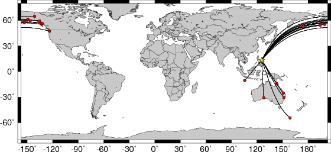

All observed and Greens function waveforms are corrected to instrument response to ground velocity in meters/sec for the passband of 0.004 - 5 Hz. The traces were then lowpass filtered at 0.25 Hz and interpolated to a sample rate of 1 second.
The moment tensor solution used has the parameters:
HS=37 STK=133 DIP=51 RAKE=-85 MW=6.8 The Green's function closest to the desired depth was DEP=0370 , where (DEP/10) is the computed depth.The cut windows attempt to include the P, pP, sP, pS, S and sS arrivals. However, one must be very careful about the fact that PP may be included in some distance ranges.
The waveforms are then bandpass filtered by the application of the following high- and low-pass stages (an optional microseism filter):
hp c 0.0083 2 lp c 0.0250 2 int br c 0.12 0.25 n 4 p 2The traces were next integrated to ground displacement in meters. Finally the observed data are interpolated to have the same sampling at the Green's functions.
The following filter ranges are used according to the moment magnitude Mw:
FILTER_BAND 1/FH(s) 1/FL(s)
1 60 12 Mw < 6.4
2 100 20 6.4 < Mw <= 6.9
3 120 40 Mw > 6.9
The map displays the distribution of stations used for this source inversion.
|
 Location of the earthquake (yellow star) and great circle path from the epicenter to each station (red) [created using GMT (Wessel, P., and W. H. F. Smith, New version of Generic Mapping Tools released, EOS Trans. AGU, 76 329, 1995.)] |
| P-wave Z component |
|
|
| Observed (red) and predicted seismograms (blue) ordered by increasing epicentral distance. Each pair of traces is annotated with the wave type and a station identifier (station, network, and channel id's), epicentral distance in degrees, source-to-station azimuth in degrees. Each seismogram pair is plotted with the same scale and the peak amplitudes in meters are shown above to the left of each trace. The optimal time shift between the observed first arrival and the predicted first arrival (in seconds) is shown above the prediction on the right. Red circles flag seismograms with amplitude misfits of a factor of 2 or more. |
| SH-wave T component |
|
|
| Observed (red) and predicted seismograms (blue) ordered by increasing epicentral distance. Each pair of traces is annotated with the wave type and a station identifier (station, network, and channel id's), epicentral distance in degrees, source-to-station azimuth in degrees. Each seismogram pair is plotted with the same scale and the peak amplitudes in meters are shown above to the left of each trace. The optimal time shift between the observed first arrival and the predicted first arrival (in seconds) is shown above the prediction on the right. Red circles flag seismograms with amplitude misfits of a factor of 2 or more. |
| SV-wave R component |
|
|
| Observed (red) and predicted seismograms (blue) ordered by increasing epicentral distance. Each pair of traces is annotated with the wave type and a station identifier (station, network, and channel id's), epicentral distance in degrees, source-to-station azimuth in degrees. Each seismogram pair is plotted with the same scale and the peak amplitudes in meters are shown above to the left of each trace. The optimal time shift between the observed first arrival and the predicted first arrival (in seconds) is shown above the prediction on the right. Red circles flag seismograms with amplitude misfits of a factor of 2 or more. |
AKUTATBHR AKUTATBHT AKUTATBHZ ARMAAUBHR ARMAAUBHT ARMAAUBHZ COENAUBHR COENAUBHT COENAUBHZ CRAGATBHR CRAGATBHT CRAGATBHZ EGAKUSBHR EGAKUSBHT EGAKUSBHZ EIDSAUBHR EIDSAUBHT EIDSAUBHZ FORTAUBHR FORTAUBHT FORTAUBHZ MCQAUBHR MCQAUBHT MCQAUBHZ MIDATBHR MIDATBHT MIDATBHZ NLWAUSBHR NLWAUSBHT NLWAUSBHZ OHAKATBHR OHAKATBHT OHAKATBHZ PMRATBHR PMRATBHT PMRATBHZ SDPTATBHR SDPTATBHT SDPTATBHZ SITATBHR SITATBHT SITATBHZ SKAGATBHR SKAGATBHT SKAGATBHZ SMYATBHR SMYATBHT SMYATBHZ WRAKUSBHR WRAKUSBHT WRAKUSBHZ WRAKUSHRBHR WRAKUSHRBHT WRAKUSHRBHZ XMISAUBHR XMISAUBHT XMISAUBHZ